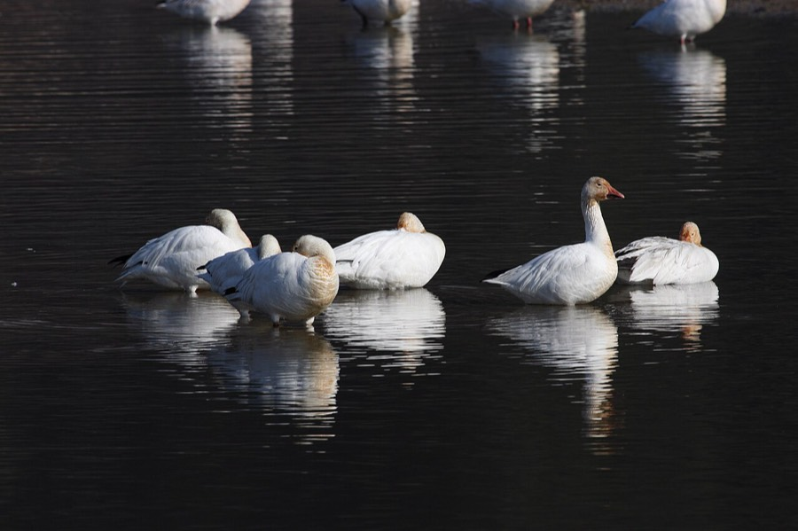
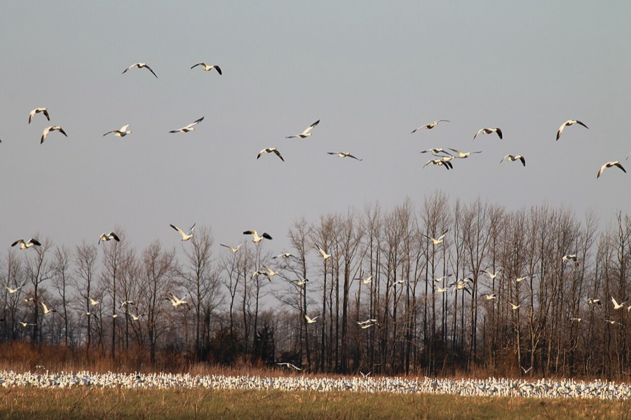

Snow Goose
Anser caerulescens


Listen
Call: a 25-second clip, cut from a 28-second recording (trimmed, with a short fade-out, and saved as a small MP3), so it plays without an internet connection. Recording by Lütgens, Hans, CC BY-SA 3.0, on Wikimedia Commons, where the whole recording is (an internet connection is needed to open it).
- Also called
- Snow geese
- Kind
- bird
- Native to Vermont
- yes
- Legal status
- A migrant through Vermont in spring and fall; not a Vermont breeder. Hunting seasons, including a spring season, are set by Vermont Fish & Wildlife. (checked 2026-11-01)
Names
Snow Goose (Anser caerulescens).
Range and habitat
A migrant stopping at open water and farm fields. The Champlain Valley checklist lists it in spring and fall only. Dead Creek Wildlife Management Area in Addison County (established in 1950 for breeding and migratory waterfowl) once attracted about 20,000 snow geese each autumn; shifts in migration routes have reduced that to about 5,000, which can be seen from the viewing area along Route 17 (Fish & Wildlife brochure). The species nests on Arctic tundra, not in Vermont (Audubon).
How to identify (by season; look-alikes and the key difference)
Typical adults are white with black wingtips and a pink-orange bill and legs; immatures are grayer. A blue morph has a gray body and wings with a white head. Length 25 to 31 inches (64 to 79 cm), wingspan 4 to 5.5 feet. Voice: a high-pitched barking 'howk-howk' (Audubon).
Through the year
Dates are typical for Vermont and shift with elevation and year; "approximate" means the source gave a season and the dates are a translation of it.
| When | What | Look for | What to do | Dates |
|---|---|---|---|---|
| Sep 20 to Nov 30 | migration (watch) | Waterfowl migrations at Dead Creek begin in late September and continue through November (Fish & Wildlife brochure). | approximate | |
| Oct 20 to Nov 10 | migration (watch) | Snow goose numbers at Dead Creek typically peak from late October to early November (Fish & Wildlife brochure). | Watch from the refuge viewing area on Route 17, in the morning or evening; keep out of the refuge itself. | stated |
Signs on the land (tracks, scat, browse, nests, holes, calls)
Flocks of white geese, sometimes thousands, on fields and open water in the fall, and the noise of a flock in flight.
Role in the forest (what it eats, what eats it, what it needs)
Almost entirely plants: seeds, leaves and roots of wild grasses, sedges, bulrushes and horsetail; winter flocks often feed on waste grain in farm fields (Audubon). Long-distance migrants, travelling in flocks, often at high altitude, in fairly narrow corridors with traditional stopover points; the Greater Snow Goose winters on the Atlantic Coast (Audubon). The Dead Creek brochure says its agricultural fields give important feeding areas, including legumes and grasses used by thousands of Canada geese and snow geese.
What helps it thrive (light, soil, shelter, food and the trees it uses)
Stopover places: open water for roosting and fields to feed in, left in grain and grass. Dead Creek is managed with dams and water-level control structures, periodic mowing and burning, and farming of some fields (Fish & Wildlife brochure).
Managing for it (habitat practices) and living with it (conflicts and damage)
For watching: use the refuge viewing area on Route 17 (the refuge itself is closed to visitors at all times), and watch in the morning or evening (Fish & Wildlife checklist). Ducks, geese and mergansers have hunting seasons set each year by Vermont Fish & Wildlife in three zones (Lake Champlain, Interior Vermont and Connecticut River). The 2024-25 dates and bag limits are in the Department's 2024 Waterfowl Program Legislative Report; they change each year, so check the current Vermont hunting regulations before acting on them. The 2024-25 report lists snow goose seasons in the fall and a spring season (March 11 to April 20, 2025, outside the fall window); the daily limit was 25 birds, with no possession limit. See Waterfowl and Migration in Vermont for the Vermont season table, where to watch, and what helps waterfowl on your land.
Legal status
Native birds are covered by the federal Migratory Bird Treaty Act, which prohibits taking (killing, capturing, selling, trading and transport are named) protected migratory birds without prior authorization (U.S. The Act applies to native species named in the treaties (50 CFR 10.13). Snow geese have both fall and spring hunting seasons in Vermont; the dates change each year.
Sources
- Vermont Fish & Wildlife, Dead Creek Wildlife Management Area brochure: https://vtfishandwildlife.com/sites/fishandwildlife/files/documents/WatchWildlife/dead-creek-brochure-web.pdf
- Vermont Fish & Wildlife, Central Champlain Valley WMAs Wildlife Sighting Checklist: https://vtfishandwildlife.com/sites/fishandwildlife/files/documents/WatchWildlife/Champlain-Valley-WMA-Checklist.pdf
- Vermont Fish & Wildlife, 2024 Waterfowl Program Legislative Report: https://legislature.vermont.gov/Documents/2026/Workgroups/House%20Environment/Reports%20and%20Resources/W~Department%20of%20Fish%20and%20Wildlife~2024%20Waterfowl%20Program%20Legislative%20Report~2-14-2025.pdf
- Audubon, Snow Goose: https://www.audubon.org/field-guide/bird/snow-goose
Vermont Woodland Owner's Reference, built 2026-11-11. Rules and dates here are summaries, not legal advice; dates shift with elevation and year. Photo and recording credits · The text is by Loop Works, CC BY 4.0 (pictures and recordings keep their own licenses)